Quem já está fazendo


Garantia de 7 dias
Teste tudo por 7 dias. Se não for pra você, devolvemos 100% do seu dinheiro, sem perguntas.
O risco é todo nosso. Você não tem nada a perder.
A receita mostra onde cada ponto vai — mas não mostra a tensão do fio, nem como costurar a base no corpo sem a mochila entortar. É aí que a maioria trava. Por isso estou refazendo a oferta pela metade do preço, e só agora.
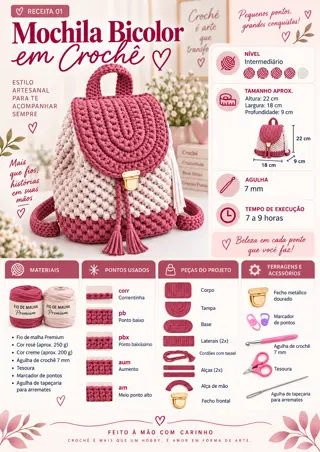
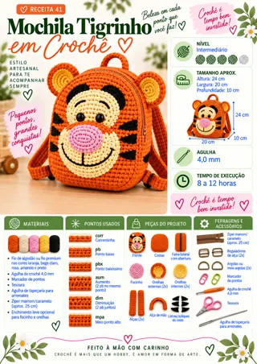
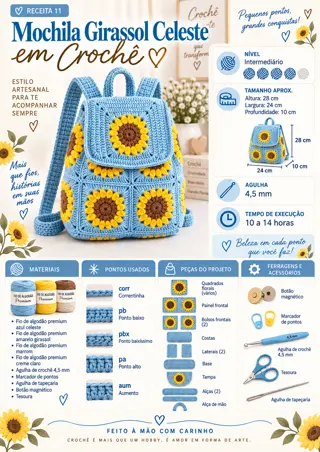
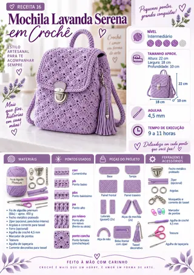
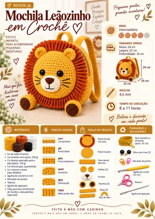
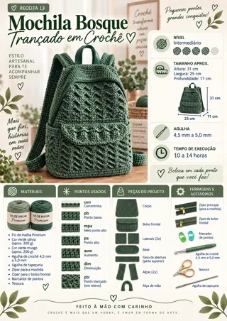
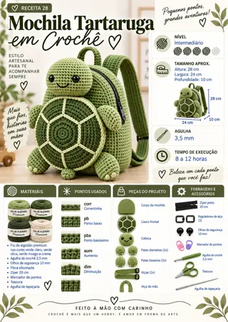
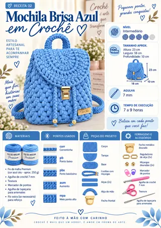
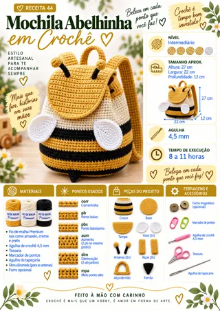
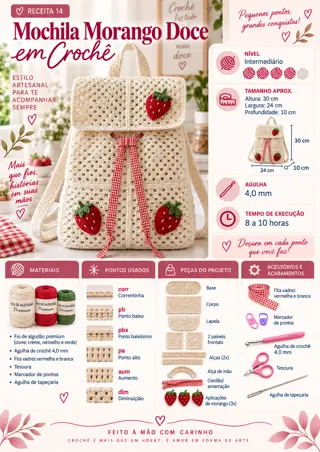
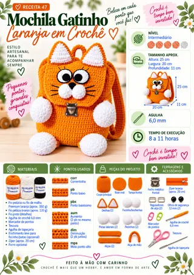
50 aulas em vídeo — uma para cada mochila da coleção, do começo ao fim.
Montagem do zero, do primeiro ponto ao acabamento — você vê exatamente onde a agulha entra em cada passo.
A tensão certa do fio — é ela que decide se a mochila sai firme ou mole e deformada.
Base, alças e fecho bem feitos — o que separa a mochila de iniciante da mochila com cara de loja.
Gravação sem corte, no aplicativo — dá para pausar, voltar dez segundos e refazer no seu ritmo.
Teste tudo por 7 dias. Se não for pra você, devolvemos 100% do seu dinheiro, sem perguntas.
Última chamada: esta oferta não volta a aparecer.
Coleção Mochilas em Crochê · todos os direitos reservados
Esta é a última vez que as aulas aparecem por R$ 9,90. Depois daqui elas voltam ao preço cheio — e a maioria só percebe que precisava delas quando a primeira mochila entorta.
Sim, eu vou precisar Não, eu assumo o risco